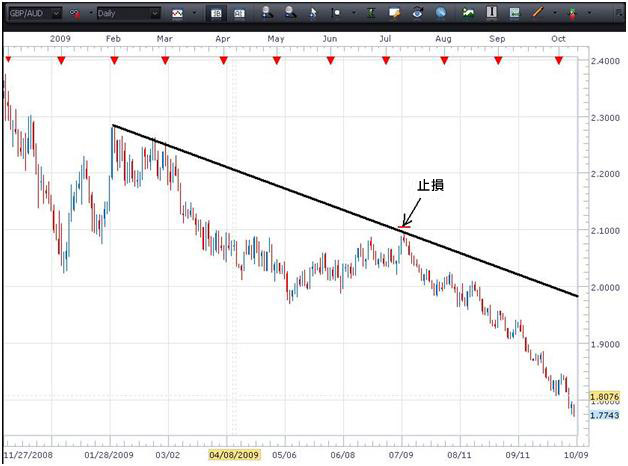
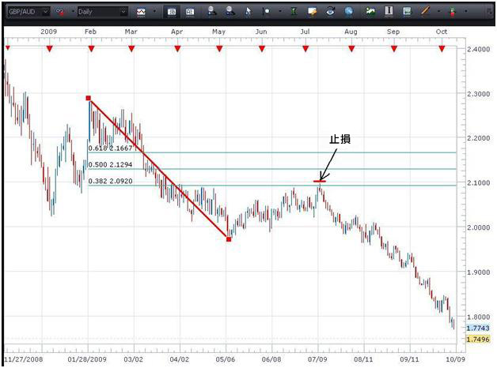
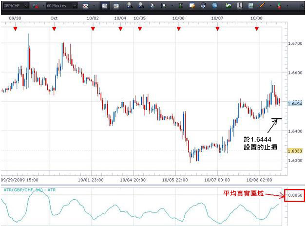
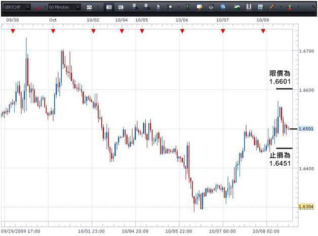

MS
止损及限价
设置止损及限价是达致成功交易的重要一环。在交易附加止损，将会逊于目前价格的一个预设价位将交易平掉。试想像它们是一个安全网，这将可防止您就此项交易招致更多亏损。止损往往会根据交易者帐户大小的某一个亏损百分比，或根据支援位元及阻力位元而设置。这是其中两种较为广泛使用的标准。无论採取何种方法，对每项交易设置保护性止损都是十分重要的。若没有设置它们，交易者便可能会招致极大的损失。
限价可使交易者平掉持仓，但却是在高于目前的价格平掉。限价往往也是以支持或阻力位为基础，但有时候它们亦以风险回报比率为基础。您可以视限价为交易的"目标"，即在市场向有利于您的方向移动时您希望离场的价位。儘管很多人不认为限价对审慎交易的重要性跟止损相同，但限价对于协助交易者作出何时平掉交易此一关键性决定时却相当有用。
止损的设置
基本上，保护性止损应在图表上符合逻辑的位置设置，即如果我们的交易假设是正确的话，市场"不会买卖"的位置。让我们看看图表以说明这一点。

在上图所描述的交易情景，货币对正处于跌势。它亦顺应我们在图表上所画的趋势线。以此为基础，每次买卖价升至趋势线的阻力位，而蜡烛的收市价并没有升穿该线段，我们便可建立短仓。我们可以看到，货币对升至趋势线，但收市价却没有升穿该水准。我们可以在该点出售货币对。
我们的交易止损可以设置于趋势线之上，以使货币对有一点喘息的空间。若我们正正在货币对买卖的水准设置止损，便可能要承受买卖价再次升至该相同的水准，然后在买卖价朝有利于我们的方向移动前便平掉交易的风险。由于这是日图(时间段越长，止损距离应该越阔)而且英镑/澳元是波幅较大的货币对，我们给予止损的喘息空间应较波幅较小的货币对的1小时图更多。我们将止损设置在"货币对应不会买卖"的部份。若货币对真的在这个部份买卖，我们便想平掉交易，因为趋势线已不复存在，而我们的交易计画亦不再有效。
在此情况下，在趋势线以上50 – 75点区间的止损可能属合宜。这将容许价格在趋势线之上一个适中的程度形成尖型，而又不会使交易被平掉。
现在看看另外数个厘定止损的方法。

使用相同的图表，但使用黄金回调比率(Fibonacci Retracement)工具，我们可以看到价格转势升至38.2%的水准，即上一个例子中买卖价触及趋势线的相同位置。一旦交易者观察到价格顺应其中一个黄金分割水准，就可在黄金分割线上设置止损以建立短仓。交易者可以再次应用买卖价之上50-75点止损及黄金分割水准。
ATR(平均真实区域)指标亦可为我们需要在挂单以外哪一个距离置设止损提供资料。当您在图表上设置平均真实区域时，它可以告诉您有关货币在图表时间段内将会移动的平均距离。

从此英镑/瑞郎的1小时图可见，此货币对的1小时平均真实区域是50点。这表示，此货币对有机会平均每小时移动50点。若我们于1.6494就此货币对建立长仓，则可在建立挂单以下的50点(即1.6444)建立止损。
建立止损的其中一个重点是让货币对有一些空间移动。交易新手往往会设置很窄的止损，因为他们不希望交易招致重大亏损。虽然这个思考过程合理，但却大有可能令您步向失败。在接近货币对的买卖价附近设置止损，几乎就像祈求止损触发一样。
于建立止损时应考虑的另一个因素是交易帐户的大小。大部份交易新手对此都感到有些意外。然而，交易者最重要是不应将止损距离设得过阔，以使帐户的一大百分比承受风险。
其中一个监察此情况的方法是跟随5%规则。交易者在任何一个时候都不应令帐户的5%以上蒙受风险。以上述英镑/瑞郎1小时图的平均真实区域为例，我们可以看到根据平均真实区域方法，需要建立一个50点的止损。若我的帐户为1,000美元，5%就是50美元。因此，根据我们的规则，帐户金额相当于该金额的交易者可以建立一项附有50点止损的交易。若触发止损，1,000美元的帐户将会在承受5%亏损后变为剩下950美元。跟随5%规则，交易者不能建立任何额外持仓，因为这会令其帐户多于5%招致损失。大部份专业交易者似乎都在此范畴跟随1%或2%规则。
建立限价
限价可以在支援位及阻力位或风险回报比率附近设置，以平掉交易。

以上图表研究了风险回报比率方法。交易者每项交易应经常跟从最少1:2的风险回报比率(RRR)。于上图，我们就交易设置了50点的止损。若要跟从1:2风险回报比率，我们将会把止损金额增加一倍(2 x 50 = 100)，我们将会在挂单价格1.6501以上的100点设置止损。
我们可以从下图看到如何使用支持阻力位厘定离场点。

在此图中，我们可以看到第一个阻力位(R1)及第二个阻力位(R2)。价格行为早已于R1位置停止，而那可能会再次构成障碍。因此，交易者可能会选择在价格再次接近该水准时将全部或部份持仓平掉。假设价格升穿R1水准，而下一个目标将会是位于约1.6700水准的R2。我们可以看到，图表左面的1.6700水准较早前曾成功作为阻力位，及大有可能再次在货币对接近该水准时作为上限。
管理风险是交易一个重要部份，而止损及限价是您最具威力的风险管理工具之一。记着花一点时间在模拟帐户内设置止损及限价，以体验一下交易的过程。